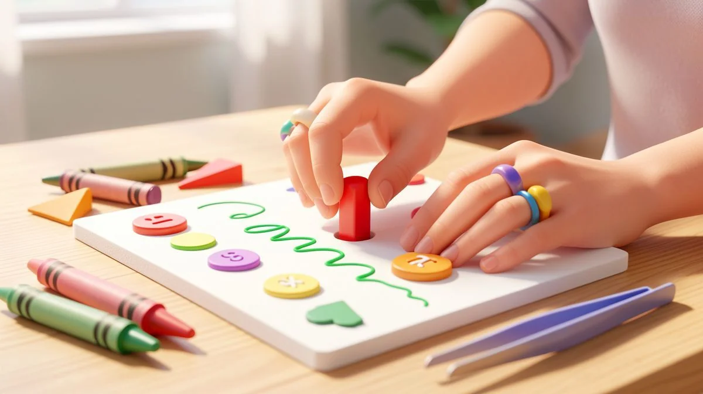
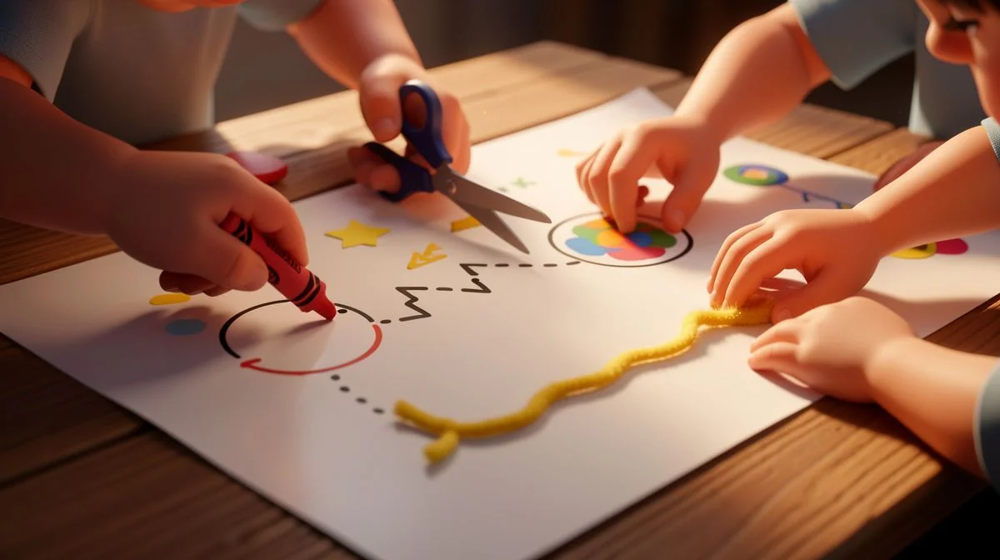
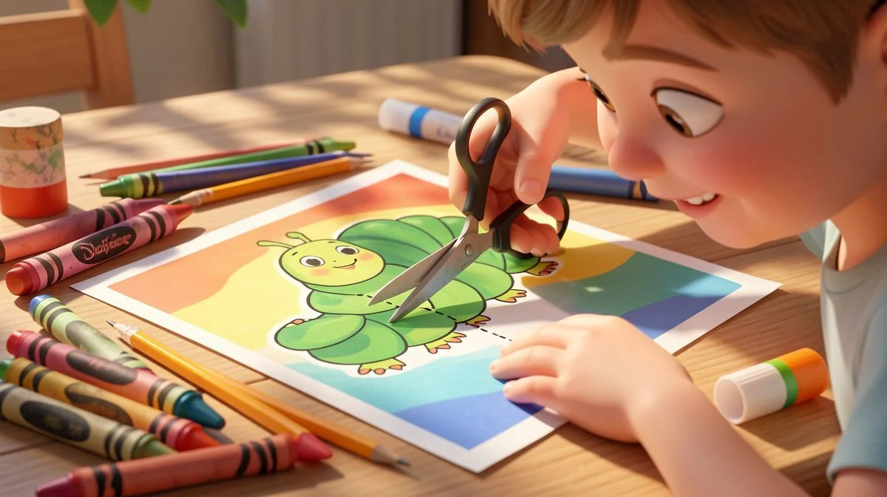
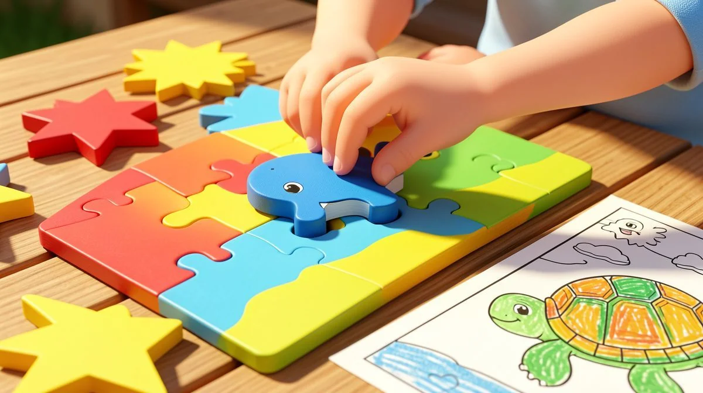
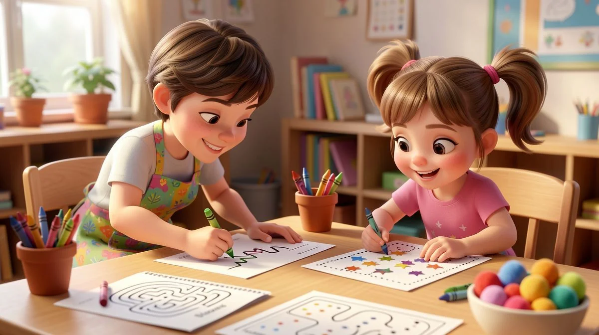

📑 Table of Contents
- Why Fine Motor Skills Worksheets Are Essential for Preschool Development
- Top 6 Types of Fine Motor Skills Worksheets for Different Learning Activities
- How to Create Effective Hands-On Learning with Worksheets
- Best Age-Appropriate Worksheet Activities for Child Development
- Essential Classroom Activities That Complement Worksheets
- Proven Assessment Methods for Tracking Fine Motor Progress
Why Fine Motor Skills Worksheets Are Essential for Preschool Development
Let's be honest. When you hand a preschooler a worksheet, it's easy to think you're just keeping them busy for a few minutes. But here's the thing: that simple page is doing some serious heavy lifting. It's not just a quiet-time filler. It's foundational work. Those little hands gripping a crayon, trying to stay inside the lines? That's the gym for their fingers. When it comes to fine motor skills worksheets for preschoolers, parents have many great options.
The Science Behind Fine Motor Development
It all starts in the brain. Every time a child attempts to trace a wavy line or snip along a dotted one, their brain is firing off rapid signals. It's building neural pathways. Think of it like paving a road. The more they practice those precise movements, the smoother and faster the connection becomes between "I want to draw a circle" and their fingers actually making it happen.
This isn't just theory. I've seen it in my own classroom. The kids who regularly engage with targeted activities show a noticeable leap in control and confidence.
How Worksheets Support Cognitive Skills
This is where it gets really interesting. Fine motor work isn't isolated. It's deeply tied to thinking. When a child is focused on a cutting sheet, they're also learning to follow step-by-step instructions. They're developing hand-eye coordination. They're building the patience to see a task through. A study from the Journal of Early Childhood Education found that kids who regularly complete fine motor activities score 23% higher on pre-writing assessments.
That's huge. It means these fine motor skills worksheets for preschoolers are secretly building their brains for academic success.
They learn cause and effect. Press harder with the crayon, get a darker line. They practice problem-solving. "How do I turn the paper to cut this corner?" It's all connected.
Age-Appropriate Milestones to Target
You can't give a three-year-old a worksheet meant for a five-year-old. It leads to frustration. And we want to build confidence, not tears. So aim for the sweet spot. For a young three or four-year-old, think big and simple. Large shapes to color. Short, straight dotted lines to trace. Thick lines to cut. The goal is success.
For a four or five-year-old ready for more? Introduce complexity. Curved and zigzag tracing paths. Cutting out simple shapes like circles or squares. Beginning letter formation guides. The progression should feel natural, like climbing a ladder one sure step at a time. This targeted practice is what makes downloadable worksheets so valuable—you can pick the perfect challenge for your child's stage. This is especially helpful for fine motor skills worksheets for preschoolers.
- Fine motor worksheets strengthen the small muscles in hands and fingers through controlled movements like tracing and cutting. This is the direct, physical prep for holding a pencil correctly.
- Research backs this up. That 23% higher score on pre-writing tests? That's the real-world payoff of consistent, playful practice.
- Match the task to the child. For 4-year-olds, basic tracing and simple cutting. For 5-year-olds, more complex patterns and starting letters.

Top 6 Types of Fine Motor Skills Worksheets for Different Learning Activities
Not all worksheets are created equal. Some are stars for building control. Others are champions for building strength. Knowing the difference helps you create a balanced "workout" for those growing hands. Here are the six types I rely on most in my practice.
1. Tracing and Path-Following Worksheets
This is your bread and butter. But ditch the boring straight lines. Look for sheets with personality! Curved roads for cars to follow, spiral snail shells, zigzag lightning bolts. These fun paths teach pencil control and visual tracking—the same eye movement needed for reading. Start with broken lines or dots to connect. Then move to full paths. The key is variety.
2. Cutting and Scissor Skills Practice
Scissor skills are a game of confidence. Start with just making snips on the edge of a paper. Then move to worksheets with thick, bold lines. Short straight lines first. Then angles. Finally, simple shapes. This builds incredible bilateral coordination (using both hands together) and hand strength. Always use child-safe scissors. And remember, it's about the process, not a perfect cut-out.
Grab our complete collection of cutting practice sheets for a structured progression. This is especially helpful for fine motor skills worksheets for preschoolers.
3. Pasting and Gluing Activities
This is about precision and planning. A worksheet might have a outlined bear and a separate sheet with cut-out bear clothes. The child cuts out the clothes (scissor practice!) and then must glue them to the right spot. This teaches spatial awareness. Pro tip: give them a glue stick, not liquid glue, at first. Less mess, more control. Worksheets with small, specific dots where the glue should go are perfect for beginners.
- Path-following worksheets with curves and spirals build the pencil control and visual tracking essential for future reading and writing.
- Cutting worksheets should start with thick lines and simple shapes. This builds the bilateral coordination and hand strength they desperately need.
- For pasting, give beginners glue sticks. Use worksheets with clear, designated glue areas marked with dots or X's to contain the chaos.
The other three types? Think lacing card printables (punch holes and use yarn), dot-to-dot or sticker worksheets (amazing for pincer grasp), and simple folding activities. Mix and match these to keep those little hands engaged and developing in all the right ways. For more creative activity ideas, check out our article on hands-on learning activities that complement worksheet practice perfectly.
How to Create Effective Hands-On Learning with Worksheets
Let's be honest. A worksheet isn't magic. It's just a piece of paper. The magic happens in how you use it. I've seen worksheets that bored kids to tears and the same exact ones that sparked a half-hour of focused, joyful work. The difference? It's all in the setup and delivery. Here's how to turn a simple printout into a powerful learning experience.

Setting Up the Optimal Learning Environment
Think about your own workspace. You need good light. A clear surface. The right tools. Kids are no different. A cluttered kitchen table with a wobbly chair is a recipe for distraction. Create a dedicated spot. It doesn't have to be fancy. A small, child-sized table in a quiet corner works wonders.
Make sure the lighting is bright. Have all the materials ready before you start: crayons, pencils, child-safe scissors, a glue stick. This minimizes the "I need the blue one!" interruptions that break concentration. The goal is to remove obstacles so their energy goes into the task, not into searching for supplies.
Differentiating Instruction for Various Skill Levels
Here's the thing. In any group of preschoolers, you'll have a range of abilities. One child might be tracing letters with ease while another is still mastering a pencil grip. If you give everyone the same worksheet, you'll frustrate some and bore others. The solution is differentiation. It sounds fancy, but it's simple.
Prepare a few versions of the same activity. For a tracing sheet, make one with thick, half-inch dotted lines. Make another with standard lines. And a third with a more complex, thin-line pattern. Let the child choose, or gently guide them to the one that offers a suitable challenge. Success builds confidence. A little struggle builds skill. Frustration just shuts everything down.
"I started offering my son a choice between two similar worksheets. The power of choosing 'the hard one' himself made him so much more invested in finishing it." – Maya, parent of a 4-year-old.
Incorporating Multi-Sensory Elements
Worksheets don't have to be flat. Engage more senses and you engage more of the brain. This is where the real fun begins. Take a standard tracing worksheet and add texture. Have your child trace the lines with a glue stick, then sprinkle on colored sand or glitter. Suddenly, they're feeling the path of the letter.
Use scented markers. Let them trace over lines with a finger dipped in washable paint. You can even place the worksheet on a bumpy surface, like a plastic mesh canvas, to create a subtle texture as they color. These hands-on learning tweaks make the activity memorable and deeply engaging. It stops being "work" and starts being an experiment.
Remember, the worksheet is a starting point, not the entire journey. Pair it with real-world action. After a worksheet on circles, go on a circle hunt around the house. After cutting practice, use the snippets for a collage. This connects the abstract skill on the page to their concrete world.
Best Age-Appropriate Worksheet Activities for Child Development
Not all worksheets are created equal. What works for a child nearing kindergarten will overwhelm a three-year-old. Matching the activity to the child's developmental stage is everything. It's the difference between a happy, focused kid and a meltdown. Let's break it down by age, focusing on realistic, achievable goals for their growing hands.

Worksheets for 3-4 Year Olds: Building Foundation Skills
At this stage, we're working on basic control. Their hands are still building strength. Think big, simple, and forgiving. Perfect fine motor skills worksheets for preschoolers this age feature:
- Large, simple shapes: Big circles, squares, and triangles to color or trace.
- Extremely thick dotted lines (at least 1/2 inch wide) for tracing.
- Activities like "connect the dots" with just 3 or 4 dots very close together.
- Basic sorting activities where they glue large pom-poms onto matching colored circles.
Tools matter too. Offer chunky crayons, thick washable markers, or even stampers. The goal is success and exposure, not precision. If they scribble all over the shape but stay mostly inside? That's a win.
Worksheets for 4-5 Year Olds: Developing Precision
Now we see more control. Their pencil grip is stabilizing. This is the sweet spot for introducing more structured tasks. Worksheets can become more detailed. Look for activities that develop precision:
- Medium-sized shapes and paths: Mazes with wider corridors, tracing lines about 1/4 inch wide.
- Beginning letter and number tracing: Focus on the letters in their name first—this has personal meaning!
- Basic patterns: "Circle, square, circle, square" sequences to continue.
- Targeted cutting practice: Sheets with short, straight lines to cut across, progressing to gentle curves.
This is a great time to introduce more variety in tools. Regular pencils, finer-tip markers, and proper child-safe scissors become the norm. You can find fantastic resources to support this phase in our library of free educational resources.
Worksheets for 5-6 Year Olds: Preparing for Kindergarten
These kids are getting ready for the structure of a classroom. Their worksheets should mirror that, building stamina and accuracy. The focus shifts to school-readiness skills. Effective worksheets include:
- Smaller shapes and complex patterns: Intricate mazes, detailed pictures to color within sharp boundaries.
- Proper letter formation guides: Sheets with directional arrows and starting dots for both upper and lowercase letters.
- Number writing practice alongside simple counting exercises.
- Complex cutting lines: Zig-zags, circles, and shapes to cut out.
The expectation is higher, but keep it positive. The worksheet is a tool for practice, not perfection. For parents looking for a comprehensive, ready-to-use set of activities that hit all these milestones, our curated premium worksheets bundles are designed with this exact progression in mind.
Honestly, the best worksheet is the one your child is excited to try. Watch their face. If it's too hard, scale back. If it's too easy, add a challenge. You're the expert on your child. Use these guidelines, but follow their lead. That's how real child development happens.
Essential Classroom Activities That Complement Worksheets
Let's be real. Worksheets alone won't cut it. They're a fantastic tool, but they're just one piece of the puzzle. If you really want those skills to stick, you've got to bring them to life. Here's how I make those fine motor skills worksheets for preschoolers work harder by pairing them with real, hands-on learning.

Center-Based Fine Motor Stations
This is my secret weapon. I set up simple stations around the room, each with a worksheet and a related hands-on task. The worksheet provides the structure, but the activity builds the muscle memory. It's a .
- Create fine motor centers with worksheets plus manipulatives like tweezers, clothespins, and beads to reinforce skills through varied practice.
- For a tracing worksheet, I'll have a station with tweezers and pom-poms. Kids trace the line first, then use the tweezers to place pom-poms along it.
- A cutting sheet gets paired with a basket of play dough and plastic scissors. They cut the paper, then snip the dough. Different textures, same skill.
It keeps them engaged. They think they're just playing. But you and I know better.
Whole Group Guided Practice Sessions
I never just hand out a sheet. We start together. I project the worksheet on the board and we "air write" the shapes or paths with our fingers. We talk about where to start. We make the pencil sound effects. It's silly, but it works.
- Begin whole group sessions with a 5-minute demonstration using a document camera to show proper technique before children work independently.
- I'll often do one myself, thinking out loud. "Hmm, this curve is tricky. I'm going to slow down right... here."
- Then, we might practice the motion on our neighbor's back with a finger before ever touching paper. It builds confidence.
This guided practice turns a solitary task into a shared experience. It builds a common language for the work they'll do alone.
Independent Work Time Strategies
This is where the magic happens—or where frustration can bubble up. My goal is to build resilient problem-solvers, not kids who wait for rescue. We use a simple rule. Honestly, it saves my sanity.
- Use a 'three before me' rule where children must try three different strategies (like adjusting grip or taking a break) before asking for help during independent work.
- Those strategies are posted on the wall with pictures: 1. Flip your pencil. 2. Shake your hand. 3. Take a deep breath and try again.
- It empowers them. They learn that a struggle isn't a stop sign. It's just a puzzle to solve. You'll see them glance at the chart, give their hand a little shake, and dive back in.
Find complete lesson plans with worksheet integration in our teacher resources section. It lays all this out, step-by-step.
Proven Assessment Methods for Tracking Fine Motor Progress
Assessment isn't about a grade. It's about seeing the story of a child's hands. Those worksheets piling up? They're a goldmine of data if you know what to look for. Forget "good job." Let's get specific.
Formative Assessment Through Worksheet Analysis
I keep a simple checklist on a clipboard. As I walk around, I'm not just seeing if they're "done." I'm watching the how. Later, I look at the collected sheets with a detective's eye.

- Analyze completed worksheets for specific indicators: pencil pressure consistency, line accuracy within 1/4 inch of target, and ability to stay within boundaries.
- Is the line dark and confident, or faint and sketchy? That tells me about muscle strength and control.
- Can they hit the corners on a shape, or do they round them off? That's about planning and precision.
This isn't busywork. It directly informs what I do tomorrow. Maybe we need more playdough time for strength. Or more targeted tracing games.
Creating Developmental Portfolios
A single worksheet is a snapshot. A portfolio is the whole movie. I use simple three-prong folders for each child. Every month, I date and slip in one key sample: a cutting sheet, a tracing maze, a coloring page. I look back with parents during conferences, and the progress is undeniable. The evidence speaks for itself.
- Create quarterly portfolios with dated worksheet samples that show progression in control, precision, and complexity over time.
- We see the journey from wobbly circles to controlled spirals. From jagged cuts to smooth curves.
- It makes the child's hard work visible. To them, and to their family. That pride is a powerful motivator.
Communicating Progress to Parents
Parents want to know more than "he's doing fine." They crave the details. So I give them the good stuff. Instead of "She's improving her cutting," I'll say, "This week, Maya cut along a 6-inch curved line and only went outside the boundary twice. Last month, she couldn't manage the curve at all." See the difference? One is vague. The other is a clear, observable win.
- Share specific observations like 'Your child can now cut along curved lines with 80% accuracy' rather than general statements when discussing progress with parents.
- I might send a photo of the worksheet with a quick voice note. "Listen to what I noticed today..." It takes two minutes and builds a huge bridge between school and home.
It shows you're really paying attention. And you are. Download our free assessment rubrics and tracking sheets from our resources page to get started with this system.
Love Learning Activities?
Discover our free printable worksheets and premium resources:
According to the National Association for the Education of Young Children (NAEYC), hands-on educational activities are for early childhood development.
Frequently Asked Questions
What are fine motor skills and why are they important for preschoolers?
Fine motor skills involve the small muscles in hands and fingers that control precise movements. They're crucial for preschoolers because they form the foundation for essential tasks like writing, buttoning clothes, using utensils, and manipulating small objects, directly impacting school readiness and independence.
How often should preschoolers practice with fine motor skills worksheets?
Preschoolers should engage in fine motor activities for 10-15 minutes daily, 3-5 times per week. Short, frequent sessions are more effective than longer occasional ones. Always follow the child's interest and energy level to maintain engagement and prevent frustration.
What's the difference between fine motor and gross motor skills?
Fine motor skills involve small precise movements using hands and fingers (like holding a pencil), while gross motor skills involve large movements using arms, legs, and torso (like running or jumping). Both develop simultaneously but require different types of activities and worksheets target fine motor specifically.
When should I be concerned about my preschooler's fine motor development?
Consult a professional if by age 4 your child consistently: struggles to hold crayons with a functional grip, cannot cut simple paper with child-safe scissors, has extreme difficulty tracing basic shapes, or shows significant hand fatigue after brief activities. Early intervention is most effective.
Can worksheets help children with special needs develop fine motor skills?
Yes, with modifications. Use thicker adaptive pencils, raised line paper, or digital tablets for tracing. Break worksheets into smaller sections and provide physical guides like hand-over-hand assistance initially. Always consult with occupational therapists for individualized strategies based on specific needs.